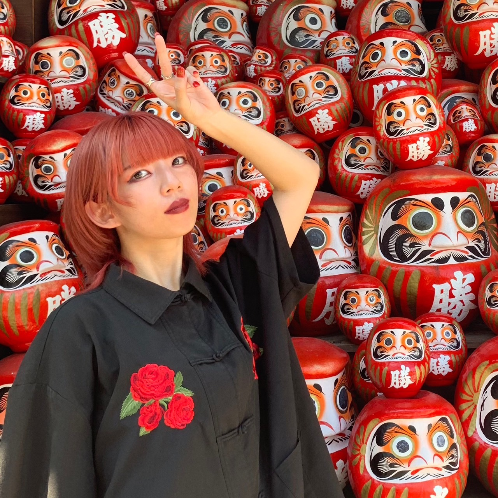

past
______________________________________________________________________Q まず初めにデザイン業界に目覚めたきっかけを教えてください
進学校に近い中高一貫校に通っていました。高校3年生の時は一般の大学の受験勉強をしていて、親が厳しく、親が求めるレベルの大学で合格できなかったから、浪人しなさいって言われました。
その時に、「勉強嫌いだしもう受験勉強無理」と思って、「自分が何がしたいか」ということを初めて考えました。自分と向き合う中で、デザイナーになりたいなと思いました。デザインの事、デザインに関わることがやりたいなと思い、そこから美大に行きたいと思いました。そもそも美術大学の存在を当時知らなくて、高校卒業してから知りました。そこから、予備校に通って、受験したという感じです。Q大学時代で印象的な課題などありますか？
富士急のアトラクションのポスターを作る課題が一番印象的だったかな。
富士急のデザインをとある先生が担当していて、実際に富士急に足を運び、一つアトラクションを決めて宣伝するポスターを制作しました。何年も続く、定番の課題です！
Q次に就活の話を聞かせてください。 まず、就職するかフリーランスか悩みましたか？
就活はめっちゃ悩んだんだけど、フリーランスになりたいか就職するかはほぼ迷わず就職の道を選びました。
Q さまざまな企業があると思うのですが、インハウスか制作会社でどちらで働くか悩まれましたか？
一瞬迷いましたが、インターンに参加していく中で、代理店が自分に合うなと思い、代理店にしました。
結構、飽きっぽいというか、色々なことをやることが好きで、多方面に興味があるタイプだったからかな。
また、個人的にガツガツやりたいというのもあって代理店系かなと思いました。
Q 当時どんな就活軸で就活をしていましたか？
- 成長意欲の高い同志を持てるか
- 美大卒が多いか
- 最先端のトレンドを得やすい環境・場所か
Q 今の会社の決め手は何でしたか？
単純に就活の面接のときに、自分のポートフォリオを評価してくれたというのが大きかったです。
隅々まで見てから、自分と面接しているのが伝わり、人を大切にしてくれる会社なんだなと思いました。シンプルに嬉しかったですし、好印象でした！
また、インターネット広告の会社だから、マス広告とは違って、
個人個人に寄り添った双方向のコミュニケーションができる媒体に携わりたい、最先端のクリエイティブに携わりたいという思いがあったからです。
now
______________________________________________________________________Q 今の仕事内容を教えてください
SNSを運用したり、キャンペーン企画したり、ロゴ制作したり、ディレクターとして制作会社とクライアントの円滑なコミュ二ケーションを図りながらプロジェクトを進行しています。
正直、会社ではあまりデザイン制作をしていなくて、進行管理や企画がメインって感じです。デザインする前段階を担っています。
Q 1日の仕事の流れを教えてください
大まかには、基本的には10時半出勤だから10時ぐらいに出社して
<午前中>
夜は、もろもろ落ち着くからそこから結構ブレストタイムって感じで、資料作成提案のための資料作成をしたり、そのデザインのデザインを考えるというかその構成を考える。
どんなデザインがいいかなとか、なんでこのデザインが良いのか説明ちゃんとできた方がいいなとかいろいろ考えたり、あとは企画考えるときは、いろいろ下調べをして、アイディア出しをしたりみたいなのを夜にかけてやるって感じです。
Q 少し質問の系統変わりますが、ようこさんの仕事に対するマインドとかをお聞きしたいと思います。 まず、仕事をする上で意識していることや気をつけていることは何ですか？
意識していることは、「相手が求めてるものを正確に捉えること」です。
自分でも一番難しいポイントではあるけど、正確に捉えた上で、相手の期待を超えるような提案できるように、
ヒアリングで相手が私に何を求めているかというところや、提案をする際に相手の表情を見ながらプレゼンしたりみたいな部分を一番意識しています。
意識しているのは、苦手だから意識していて、逆に私が意識せずともやっていることは、「妥協しないこと」です。
社会人になれば、費用も時間にも制限があるから、全てをこだわり抜くことはできないけど、お金も時間も許す範囲内でできる最大限のことをやろうみたいなことは、意識してはないけど、多分めちゃくちゃやってます！
Q ようこさんのインプット方法を教えてください。
仕事してると、本当に仕事が忙しすぎてインプットが雑になってしまうけど、その中で意識的にやるようにしていることは
街中歩いていたらさいろんなキャンペーンに遭遇する機会があると思うんだけど、QRコード読み込んだり、アプリダウンロードしたりと面倒くさいと思ってやらないこと多いと思うけど、一旦やって体験してみる！
意外とこれ大事!!!!!
Q デザインの引き出しを増やすためにしてることはありますか？
メインで作品をたくさんみたり、本物のデザイナーの画集を見たりと最近疎かになってしまっていますが、本物のデザインに触れることです。
社会人になってから、先輩に教えていただいたのが、人によってかっこいいデザインでも想像するものが違ったりする。
なので、自分の中でポップなデザインはこういう感じ、可愛いデザインはこういう感じみたいな感じで分類していく。それぞれのデザインに引き出しを持つことを意識してインプットします。 自分の頭の中で先に分類しておけば、提案する際にこういう感じですか、これ認識間違いないですか？という風に相違をなくしていける。言語化を自分の中でするイメージです。
Q ヒアリングする際に意識していることや気をつけていることありますか？
相手の反応を見ることです。
事前に何を聞くのかみたいなのをしっかり準備していくことで、ヒアリングの場で相手の表情を見ながら、こういうのどうですかねみたいな感じで聞いていく感じかな。
大抵やり取りがオンラインなので、極力相手の画面をめっちゃ見ます。ヒアリングは本当に難しいけど、そこがきちんとできれば、工数削減や修正の回数も減ってスムーズに話が進んで、向こうの印象も良くなるし。全部が良いので、頑張ろうって感じです。
future
______________________________________________________________________Q 最後に今後のキャリアビションを聞かせてください！
具体的には考えられないかもしれないけど、アートディレクターになりたいです。
そのために、目の前の仕事に真摯に向き合うのはすごい大事だと思っていて、調整力じゃないけどディレクション力みたいなところを、 ヒアリングをして、相手が欲しいと思ってるものをちゃんと出せるようになるみたいなところだったり、制作会社ともスムーズに進行しないと全然違うもの上がってきたらやばいからさ。
もし、伝わらなかった時やトラブルが発生したときの解決力だったりをこれは鍛えていくものだと思うので、
今までは感覚だけでアウトプットしてきた人間だから、それを言語化して伝えていくのが目前の目標です。
さっき言ってたように、自分のやりたいデザインもやっていきたいから、もうちょっと今できてないところはあって、
自分が自分の世界観をもっと確立して、それをきちんと発信できるように、なりたいです。
インフルエンサーじゃないけど、自分のことを発信できるように、多様なことを同時並行で進めていくことで、周りの人と調整できるよう、うまく仕事ができるようになっていると思うから、
周りが求めてるものっていうのを会社で学べて、自分がやりたいことをプライベートでやってるからそれを最終的に融合させるっていうのが、5年後10年後の目標になるかなと。
Q 融合させる時というのは独立していくイメージですか？
独立じゃなくてもいいと思っていて、もう少し自由で小さな制作会社に所属しながら、個人の仕事と制作の仕事を実現できる働き方も出来るかなっていう感じです。
今の会社にずっといるイメージはあんまりないです。会社全体でみるとキャリアアップのために転職する人多いし、全然戻ってくる人もいる。
私も何か1ヶ所にとどまりたくないタイプだから、セカンドキャリアだけじゃなくても転職したいと思ってるし、いろんな世界を知りたいし、自分のスキルを増やしていきたいからなっていうふうに思ってます。
ご協力ありがとうございました！